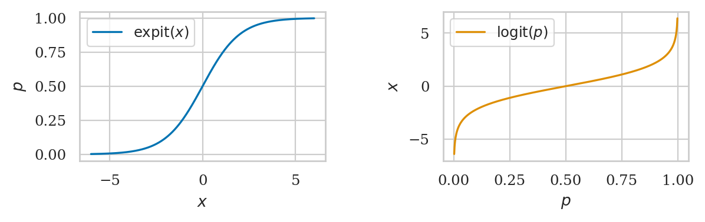
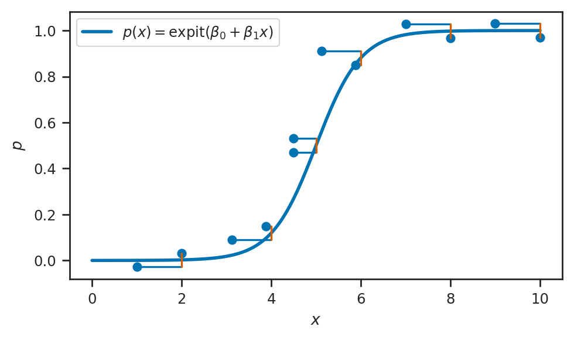
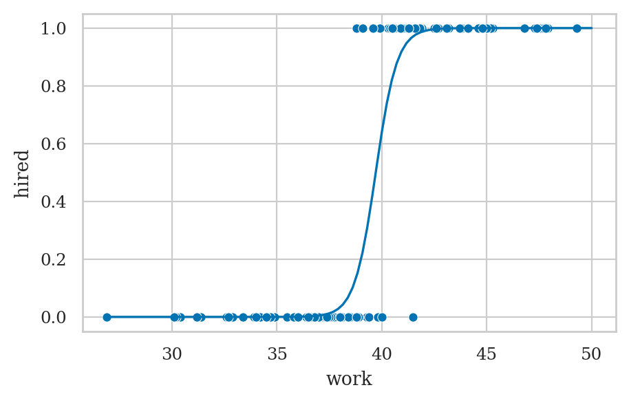
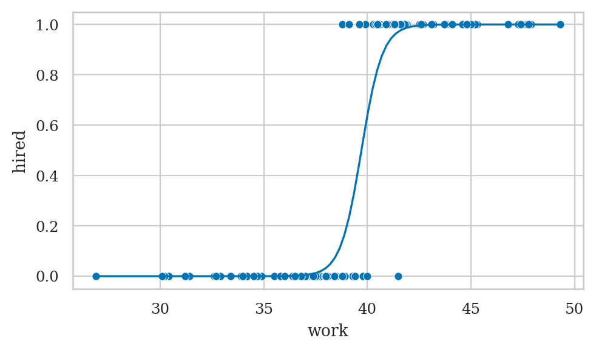
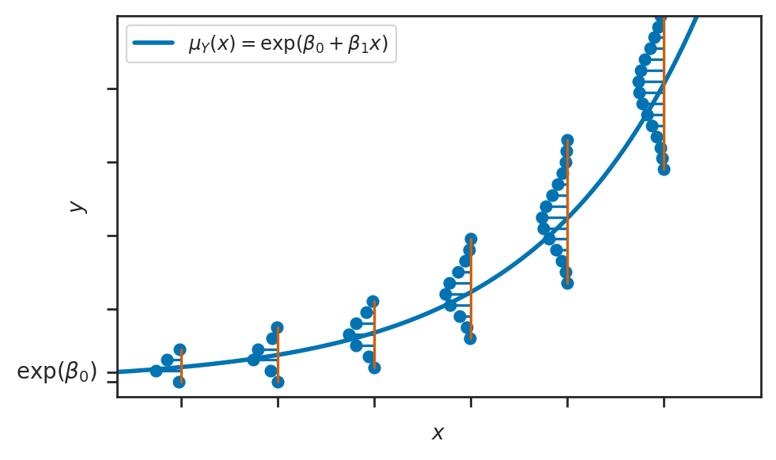
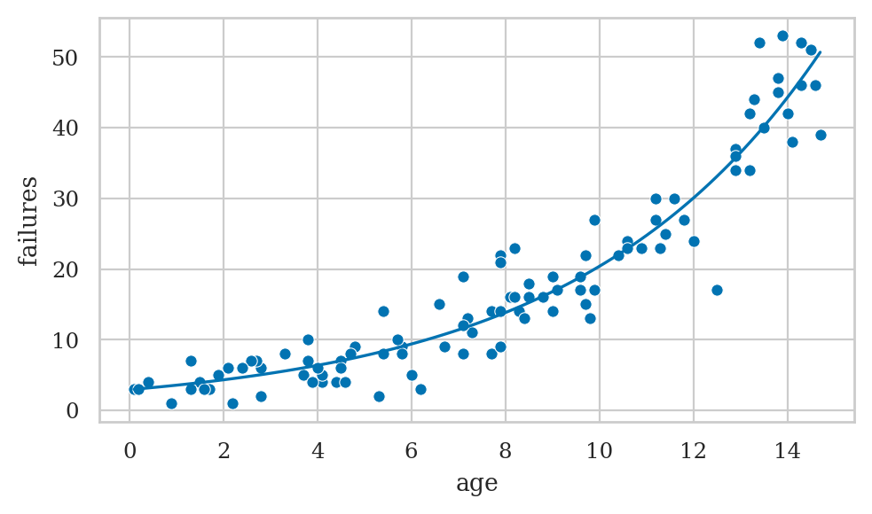

Section 4.6 — Generalized linear models#
This notebook contains the code examples from Section 4.6 Generalized linear models from the No Bullshit Guide to Statistics.
Notebook setup#
# load Python modules
import os
import numpy as np
import pandas as pd
import seaborn as sns
# Figures setup
import matplotlib.pyplot as plt
plt.clf() # needed otherwise `sns.set_theme` doesn't work
from plot_helpers import RCPARAMS
RCPARAMS.update({"figure.figsize": (5, 3)}) # good for screen
# RCPARAMS.update({'figure.figsize': (10, 3)}) # good for screen
# RCPARAMS.update({'figure.figsize': (4, 2)}) # good for print
sns.set_theme(
context="paper",
style="whitegrid",
palette="colorblind",
rc=RCPARAMS,
)
# High-resolution please
%config InlineBackend.figure_format = 'retina'
# Where to store figures
DESTDIR = "figures/lm/generalized"
<Figure size 640x480 with 0 Axes>
from ministats.utils import savefigure
#######################################################
Definitions#
Probability representations and link functions#
Odds#
0.5/(1-0.5), 0.9/(1-0.9), 0.2/(1-0.2)
(1.0, 9.000000000000002, 0.25)
Log-odds#
np.log(0.5/(1-0.5)), np.log(0.9/(1-0.9)), np.log(0.2/(1-0.2))
(0.0, 2.1972245773362196, -1.3862943611198906)
The logit function#
def logit(p):
x = np.log(p / (1-p))
return x
# ALT. import the function from `scipy.special`
from scipy.special import logit
logit(0.5), logit(0.9), logit(0.2)
(0.0, 2.1972245773362196, -1.3862943611198906)
The logistic function#
def expit(x):
p = 1 / (1 + np.exp(-x))
return p
# ALT. import the function from `scipy.special`
from scipy.special import expit
expit(0), expit(2), expit(-2)
(0.5, 0.8807970779778823, 0.11920292202211755)
# FIGURES ONLY
fig, (ax1, ax2) = plt.subplots(1, 2, figsize=(6, 2))
# plot the expit function, a.k.a. the logistic function
xs = np.linspace(-6, 6, 500)
sns.lineplot(x=xs, y=expit(xs), ax=ax1, label="$\\mathrm{expit}(x)$")
ax1.set_xlabel("$x$")
ax1.set_ylabel("$p$")
# plot the logit function
ps = np.linspace(0, 1, 600)
sns.lineplot(x=ps, y=logit(ps), ax=ax2, label="$\\mathrm{logit}(p)$", color="C1")
ax2.set_xlabel("$p$")
ax2.set_ylabel("$x$")
filename = os.path.join(DESTDIR, "logistic_and_logit_functions.pdf")
savefigure(fig, filename, tight_layout_kwargs=dict(w_pad=3))
Saved figure to figures/lm/generalized/logistic_and_logit_functions.pdf
Saved figure to figures/lm/generalized/logistic_and_logit_functions.png

The logistic and logit functions are inverses#
expit(logit(0.2))
0.2
logit(expit(3))
3.000000000000003
Logistic regression#
TODO FORMULA
# FIGURES ONLY
from scipy.stats import bernoulli
from scipy.special import expit
# Define the logistic regression model function
def expit_model(x):
p = expit(-10 + 2*x)
return p
xlims = [0, 10]
stem_half_width = 0.03
with sns.axes_style("ticks"):
fig, ax = plt.subplots(figsize=(5, 3))
# Plot the logistic regression model
xs = np.linspace(xlims[0], xlims[1], 200)
ps = expit_model(xs)
sns.lineplot(x=xs, y=ps, ax=ax, label=r"$p(x) = \mathrm{expit}(\beta_0 + \beta_1x)$", linewidth=2)
# Plot Bernoulli distributions at specified x positions
x_positions = [2,4,5,6,8,10]
for x_pos in x_positions:
p_pos = expit_model(x_pos)
ys = [0,1]
pmf = bernoulli(p=p_pos).pmf(ys)
ys_plot = [p_pos-stem_half_width, p_pos+stem_half_width]
ax.stem(ys_plot, x_pos - pmf, bottom=x_pos, orientation='horizontal')
# Figure setup
ax.set_xlabel("$x$")
ax.set_ylabel("$p$")
ax.legend(loc="upper left")
filename = os.path.join(DESTDIR, "logistic_regression_xy_with_stemplots.pdf")
savefigure(fig, filename)
Saved figure to figures/lm/generalized/logistic_regression_xy_with_stemplots.pdf
Saved figure to figures/lm/generalized/logistic_regression_xy_with_stemplots.png

expit(-6)
0.0024726231566347743
expit(10)
0.9999546021312976
Example 1: hiring student interns#
interns = pd.read_csv("../datasets/interns.csv")
print(interns.shape)
interns.head(3)
(100, 2)
| work | hired | |
|---|---|---|
| 0 | 42.5 | 1 |
| 1 | 39.3 | 0 |
| 2 | 43.2 | 1 |
import statsmodels.formula.api as smf
lr1 = smf.logit("hired ~ 1 + work", data=interns).fit()
print(lr1.params)
Optimization terminated successfully.
Current function value: 0.138101
Iterations 10
Intercept -78.693205
work 1.981458
dtype: float64
lr1.summary()
| Dep. Variable: | hired | No. Observations: | 100 |
|---|---|---|---|
| Model: | Logit | Df Residuals: | 98 |
| Method: | MLE | Df Model: | 1 |
| Date: | Tue, 03 Sep 2024 | Pseudo R-squ.: | 0.8005 |
| Time: | 16:11:45 | Log-Likelihood: | -13.810 |
| converged: | True | LL-Null: | -69.235 |
| Covariance Type: | nonrobust | LLR p-value: | 6.385e-26 |
| coef | std err | z | P>|z| | [0.025 | 0.975] | |
|---|---|---|---|---|---|---|
| Intercept | -78.6932 | 19.851 | -3.964 | 0.000 | -117.600 | -39.787 |
| work | 1.9815 | 0.500 | 3.959 | 0.000 | 1.001 | 2.962 |
Possibly complete quasi-separation: A fraction 0.32 of observations can be
perfectly predicted. This might indicate that there is complete
quasi-separation. In this case some parameters will not be identified.
ax = sns.scatterplot(data=interns, x="work", y="hired")
wgrid = np.linspace(27, 50, 100)
hired_preds = lr1.predict({"work": wgrid})
sns.lineplot(x=wgrid, y=hired_preds, ax=ax);

from ministats import plot_reg
plot_reg(lr1)
# FIGURES ONLY
filename = os.path.join(DESTDIR, "logistic_regression_interns_hired_vs_work.pdf")
savefigure(plt.gcf(), filename)
Saved figure to figures/lm/generalized/logistic_regression_interns_hired_vs_work.pdf
Saved figure to figures/lm/generalized/logistic_regression_interns_hired_vs_work.png

lr1.summary()
| Dep. Variable: | hired | No. Observations: | 100 |
|---|---|---|---|
| Model: | Logit | Df Residuals: | 98 |
| Method: | MLE | Df Model: | 1 |
| Date: | Tue, 03 Sep 2024 | Pseudo R-squ.: | 0.8005 |
| Time: | 16:11:46 | Log-Likelihood: | -13.810 |
| converged: | True | LL-Null: | -69.235 |
| Covariance Type: | nonrobust | LLR p-value: | 6.385e-26 |
| coef | std err | z | P>|z| | [0.025 | 0.975] | |
|---|---|---|---|---|---|---|
| Intercept | -78.6932 | 19.851 | -3.964 | 0.000 | -117.600 | -39.787 |
| work | 1.9815 | 0.500 | 3.959 | 0.000 | 1.001 | 2.962 |
Possibly complete quasi-separation: A fraction 0.32 of observations can be
perfectly predicted. This might indicate that there is complete
quasi-separation. In this case some parameters will not be identified.
Interpreting the model parameters#
Parameters as changes in the log-odds#
lr1.params["work"]
1.9814577697476699
Parameters as ratios of odds#
np.exp(lr1.params["work"])
7.25330893626573
Differences in probabilities#
What is the marginal effect of the predictor work
for an intern who invests 40 hours of effort?
# using `statsmodels`
lr1.get_margeff(atexog={1:40}).summary_frame()
| dy/dx | Std. Err. | z | Pr(>|z|) | Conf. Int. Low | Cont. Int. Hi. | |
|---|---|---|---|---|---|---|
| work | 0.45783 | 0.112623 | 4.065157 | 0.000048 | 0.237093 | 0.678567 |
lr1.get_margeff(atexog={1:42}).summary_frame()
| dy/dx | Std. Err. | z | Pr(>|z|) | Conf. Int. Low | Cont. Int. Hi. | |
|---|---|---|---|---|---|---|
| work | 0.020949 | 0.021358 | 0.98084 | 0.326672 | -0.020912 | 0.06281 |
# # ALT. manual calculation plugging into derivative of `expit`
# p40 = lr1.predict({"work":40}).item()
# marg_effect_at_40 = p40 * (1 - p40) * lr1.params['work']
# marg_effect_at_40
Prediction#
p42 = lr1.predict({"work":42})[0]
p42
0.9893134055105761
Poisson regression#
# FIGURES ONLY
from scipy.stats import poisson
# Define the linear model function
def exp_model(x):
lam = np.exp(1 + 0.2*x)
return lam
onepixel = 0.07
xlims = [0, 20]
ylims = [0, 100]
with sns.axes_style("ticks"):
fig, ax = plt.subplots(figsize=(5, 3))
# Plot the linear model
xs = np.linspace(xlims[0], xlims[1], 200)
lams = exp_model(xs)
sns.lineplot(x=xs, y=lams, ax=ax, label=r"$\mu_Y(x) = \exp(\beta_0 + \beta_1x)$", linewidth=2)
# Plot Gaussian distributions at specified x positions and add sigma lines
x_positions = range(2, xlims[1]-1, 3)
for x_pos in x_positions:
lam_pos = exp_model(x_pos)
sigma = np.sqrt(lam_pos)
ys_lower = int(lam_pos-2.5*sigma)
ys_upper = int(lam_pos+3.4*sigma)
ys = np.arange(ys_lower, ys_upper, 3)
pmf = poisson(mu=lam_pos).pmf(ys)
# ax.fill_betweenx(ys, x_pos - 2 * pmf * sigma, x_pos, color="grey", alpha=0.5)
ax.stem(ys, x_pos- 2 * pmf * sigma, bottom=x_pos, orientation='horizontal')
# Draw vertical sigma line and label it on the opposite side of the Gaussian shape
# ax.plot([x_pos+onepixel, x_pos+onepixel], [lam_pos, lam_pos - sigma], "k", lw=1)
# ax.text(x_pos + 0.1, lam_pos - sigma / 2 - 3*onepixel, r"$\sigma$", fontsize=12, va="center")
# y-intercept
ax.text(0 - 0.6, np.exp(1), r"$\exp(\beta_0)$", fontsize=10, va="center", ha="right")
# Set up x-axis
ax.set_xlim(xlims)
ax.set_xlabel("$x$")
ax.set_xticks(range(2, xlims[1], 3))
ax.set_xticklabels([])
# Set up y-axis
ax.set_ylim([ylims[0]-4,ylims[1]])
ax.set_ylabel("$y$")
ax.set_yticks(list(range(ylims[0],ylims[1],20)) + [np.exp(1)] )
ax.set_yticklabels([])
ax.legend(loc="upper left")
filename = os.path.join(DESTDIR, "poisson_regression_xy_with_stemplots.pdf")
savefigure(fig, filename)
Saved figure to figures/lm/generalized/poisson_regression_xy_with_stemplots.pdf
Saved figure to figures/lm/generalized/poisson_regression_xy_with_stemplots.png

Example 2: hard disk failures over time#
hdisks = pd.read_csv("../datasets/hdisks.csv")
hdisks.head(3)
| age | failures | |
|---|---|---|
| 0 | 1.7 | 3 |
| 1 | 14.6 | 46 |
| 2 | 10.9 | 23 |
import statsmodels.formula.api as smf
pr2 = smf.poisson("failures ~ 1 + age", data=hdisks).fit()
pr2.params
Optimization terminated successfully.
Current function value: 2.693129
Iterations 6
Intercept 1.075999
age 0.193828
dtype: float64
pr2.summary()
| Dep. Variable: | failures | No. Observations: | 100 |
|---|---|---|---|
| Model: | Poisson | Df Residuals: | 98 |
| Method: | MLE | Df Model: | 1 |
| Date: | Tue, 03 Sep 2024 | Pseudo R-squ.: | 0.6412 |
| Time: | 16:11:47 | Log-Likelihood: | -269.31 |
| converged: | True | LL-Null: | -750.68 |
| Covariance Type: | nonrobust | LLR p-value: | 2.271e-211 |
| coef | std err | z | P>|z| | [0.025 | 0.975] | |
|---|---|---|---|---|---|---|
| Intercept | 1.0760 | 0.076 | 14.114 | 0.000 | 0.927 | 1.225 |
| age | 0.1938 | 0.007 | 28.603 | 0.000 | 0.181 | 0.207 |
from ministats import plot_reg
plot_reg(pr2)
# FIGURES ONLY
filename = os.path.join(DESTDIR, "poisson_regression_hdisks_failures_vs_age.pdf")
savefigure(plt.gcf(), filename)
Saved figure to figures/lm/generalized/poisson_regression_hdisks_failures_vs_age.pdf
Saved figure to figures/lm/generalized/poisson_regression_hdisks_failures_vs_age.png

pr2.summary()
| Dep. Variable: | failures | No. Observations: | 100 |
|---|---|---|---|
| Model: | Poisson | Df Residuals: | 98 |
| Method: | MLE | Df Model: | 1 |
| Date: | Tue, 03 Sep 2024 | Pseudo R-squ.: | 0.6412 |
| Time: | 16:11:47 | Log-Likelihood: | -269.31 |
| converged: | True | LL-Null: | -750.68 |
| Covariance Type: | nonrobust | LLR p-value: | 2.271e-211 |
| coef | std err | z | P>|z| | [0.025 | 0.975] | |
|---|---|---|---|---|---|---|
| Intercept | 1.0760 | 0.076 | 14.114 | 0.000 | 0.927 | 1.225 |
| age | 0.1938 | 0.007 | 28.603 | 0.000 | 0.181 | 0.207 |
Interpreting the model parameters#
Log-counts#
pr2.params["age"]
0.19382784821454072
Incidence rate ratio (IRR)#
np.exp(pr2.params["age"])
1.213887292102993
Marginal effect#
What is the marginal effect of the predictor age
for a 10 year old hard disk installation?
# using `statsmodels` .get_margeff() method
pr2.get_margeff(atexog={1:10}).summary_frame()
| dy/dx | Std. Err. | z | Pr(>|z|) | Conf. Int. Low | Cont. Int. Hi. | |
|---|---|---|---|---|---|---|
| age | 3.94912 | 0.151882 | 26.001165 | 4.804151e-149 | 3.651435 | 4.246804 |
# # ALT. manual calculation of the slope by evaluating the derivative
# b_0 = pr2.params['Intercept']
# b_age = pr2.params['age']
# np.exp(b_0 + b_age*10)*b_age
Predictions#
lam10 = pr2.predict({"age":10})[0]
lam10
20.374365915173986
from scipy.stats import poisson
Hhat = poisson(mu=lam10)
Hhat.ppf(0.05), Hhat.ppf(0.95)
(13.0, 28.0)
Explanations#
The exponential family of distributions#
exponential
Gaussian (normal)
Poisson
Binomial
The generalized linear model template#
choose
Generalized linear models using statsmodels#
import statsmodels.api as sm
Norm = sm.families.Gaussian()
Bin = sm.families.Binomial()
Pois = sm.families.Poisson()
Linear model#
students = pd.read_csv('../datasets/students.csv')
formula0 = "score ~ 1 + effort"
glm0 = smf.glm(formula0, data=students, family=Norm).fit()
glm0.params
Intercept 32.465809
effort 4.504850
dtype: float64
Logistic regression#
formula1 = "hired ~ 1 + work"
glm1 = smf.glm(formula1, data=interns, family=Bin).fit()
glm1.params
# glm1.summary()
Intercept -78.693205
work 1.981458
dtype: float64
Poisson regression#
formula2 = "failures ~ 1 + age"
glm2 = smf.glm(formula2, data=hdisks, family=Pois).fit()
glm2.params
# glm2.summary()
Intercept 1.075999
age 0.193828
dtype: float64
Fitting generalized linear models#
Standardization of predictors#
from scipy.stats import zscore
efforts = students["effort"]
zefforts = zscore(efforts)
zefforts.head(3)
0 1.092044
1 -0.114057
2 -0.161876
Name: effort, dtype: float64
# # ALT. define custom function equivalent to zscore(data)
# def standardize(data):
# datamean = data.mean()
# datastd = data.std(ddof=1)
# zdata = (data - datamean) / datastd
# return zdata
students["zeffort"] = zefforts
lm1s = smf.ols("score~1+zeffort", data=students).fit()
lm1s.params
Intercept 72.580000
zeffort 8.478568
dtype: float64
lm1s.params["zeffort"] / students["effort"].std(ddof=0)
4.504850344209072
glm0.params["effort"]
4.504850344209074
Marginal effects#
It can be difficult to interpret GLM parameters directly, but we can always ask the question about “slopes” the rate of change of interesting parameters.
import marginaleffects as me
---------------------------------------------------------------------------
ModuleNotFoundError Traceback (most recent call last)
Cell In[50], line 1
----> 1 import marginaleffects as me
ModuleNotFoundError: No module named 'marginaleffects'
Raw parameters#
lr1.params["work"], np.exp(lr1.params["work"])
(1.9814577697476699, 7.25330893626573)
The parameter tells us the log-odds ratio changes by 1.981,
or equivalently,
that the odd-ratio changes by a factor of 7.253 for each additional hour of work.
Marginal effect at a user-specified value#
Example To calculate the marginal effect of the predictor work
for an intern who invests 40 hours of effort.
# using `statsmodels`
lr1.get_margeff(atexog={1:40}).summary_frame()
| dy/dx | Std. Err. | z | Pr(>|z|) | Conf. Int. Low | Cont. Int. Hi. | |
|---|---|---|---|---|---|---|
| work | 0.45783 | 0.112623 | 4.065157 | 0.000048 | 0.237093 | 0.678567 |
# ALT. using `marginaleffects`
dg40 = me.datagrid(lr1, work=[40])
me.slopes(lr1, newdata=dg40).to_pandas()
| term | contrast | estimate | std_error | statistic | p_value | s_value | conf_low | conf_high | |
|---|---|---|---|---|---|---|---|---|---|
| 0 | work | dY/dX | 0.45783 | 0.112263 | 4.078207 | 0.000045 | 14.427447 | 0.237799 | 0.677861 |
# ALT2. manual calculation plugging into derivative of `expit`
p40 = lr1.predict({"work":40}).item()
marg_effect_at_40 = p40 * (1 - p40) * lr1.params['work']
marg_effect_at_40
0.45782997989918905
Average marginal effect (AME)#
For each observation \((w_i,h_i)\), compute the marginal effect at \(w=w_i\), then average them together.
lr1.get_margeff().summary_frame()
| dy/dx | Std. Err. | z | Pr(>|z|) | Conf. Int. Low | Cont. Int. Hi. | |
|---|---|---|---|---|---|---|
| work | 0.08077 | 0.00422 | 19.139418 | 1.185874e-81 | 0.072499 | 0.089041 |
# ALT. using the `marginaleffects` package
me.avg_slopes(lr1).to_pandas()
| term | contrast | estimate | std_error | statistic | p_value | s_value | conf_low | conf_high | |
|---|---|---|---|---|---|---|---|---|---|
| 0 | work | mean(dY/dX) | 0.08077 | 0.00422 | 19.138224 | 0.0 | inf | 0.072498 | 0.089042 |
# ALT2. manual computation using a for-loop
meffects = []
for i, row in interns.iterrows():
p = lr1.predict({"work":row["work"]}).item()
meffect = p * (1-p) * lr1.params['work']
meffects.append(meffect)
AME = np.mean(meffects)
AME
0.08076985840552156
Marginal effect at the mean (MEM)#
lr1.get_margeff(at="mean").summary_frame()
| dy/dx | Std. Err. | z | Pr(>|z|) | Conf. Int. Low | Cont. Int. Hi. | |
|---|---|---|---|---|---|---|
| work | 0.47034 | 0.121697 | 3.864838 | 0.000111 | 0.231818 | 0.708862 |
# ALT. using the `marginaleffects` package
me.slopes(lr1, newdata="mean").to_pandas()
| term | contrast | estimate | std_error | statistic | p_value | s_value | conf_low | conf_high | |
|---|---|---|---|---|---|---|---|---|---|
| 0 | work | dY/dX | 0.47034 | 0.121818 | 3.861021 | 0.000113 | 13.112488 | 0.231582 | 0.709098 |
# ALT2. manual computation
meanwork = interns["work"].mean()
p_at_mean = lr1.predict({"work":meanwork}).item()
MEM = p_at_mean * (1-p_at_mean) * lr1.params['work']
MEM
0.47034017780957577
The marginaleffects package provides some useful plots to visualize the predictions and slopes.
# me.plot_predictions(lr1, condition="work")
# me.plot_slopes(lr1, condition="work")
Links to learn more about marginal effects
Discussion#
Model diagnostics and validation#
# Dispersion from GLM attributes
# glm2.pearson_chi2 / glm2.df_resid
# Calculate Pearson chi-squared statistic
observed = hdisks['failures']
predicted = pr2.predict()
pearson_residuals = (observed - predicted) / np.sqrt(predicted)
pearson_chi2 = np.sum(pearson_residuals**2)
df_resid = pr2.df_resid
dispersion = pearson_chi2 / df_resid
print(f'Dispersion: {dispersion}')
# If dispersion > 1, consider Negative Binomial regression
Dispersion: 0.9869289289681199
ScikitLearn models#
# Cross check with sklearn
from sklearn.linear_model import LogisticRegression
X1_skl = interns[["work"]]
y1_skl = interns["hired"]
lr1_skl = LogisticRegression(penalty=None).fit(X1_skl, y1_skl)
lr1_skl.intercept_, lr1_skl.coef_
(array([-78.69320824]), array([[1.98145785]]))
lr1.params
Intercept -78.693205
work 1.981458
dtype: float64
hdisks.dtypes
age float64
failures int64
dtype: object
from sklearn.linear_model import PoissonRegressor
X2_skl = hdisks[["age"]]
y2_skl = hdisks["failures"]
pr2_skl = PoissonRegressor(alpha=0).fit(X2_skl, y2_skl)
pr2_skl.intercept_, pr2_skl.coef_
(1.0759942750890905, array([0.19382823]))
pr2.params
Intercept 1.075999
age 0.193828
dtype: float64
Logistic regression as a building blocks for neural networks#
The operation of the perceptron, which is the basic building block of neural networks, is essentially the same as linear regression model:
constant intercept (bias term)
linear combination of inputs
nonlinear function used to force the output to be between 0 and 1
Limitations of GLMs#
GLMs assume observations are independent
Assumes distribution \(\mathcal{M}\) is one of the exponential family
Outliers can be problematic
Interpretability
Exercises#
Exercise 1: probabilities to odds and log-odds#
0.3/(1-0.3), 0.99/(1-0.99), 0.7/(1-0.7)
(0.4285714285714286, 98.99999999999991, 2.333333333333333)
logit(0.3), logit(0.99), logit(0.7)
(-0.8472978603872036, 4.595119850134589, 0.8472978603872034)
Exercise 2: log-odds to probabilities#
expit(-1), expit(1), expit(2)
(0.2689414213699951, 0.7310585786300049, 0.8807970779778823)
Exercise 3: students pass or fail#
a) Load the dataset students.csv and add a column passing
that contains 1 or 0, based on the above threshold score of 70.
students = pd.read_csv('../datasets/students.csv')
students["passing"] = (students["score"] > 70).astype(int)
# students.head()
b) Fit a logistic regression model for passing based on effort variable.
lmpass = smf.logit("passing ~ 1 + effort", data=students).fit()
print(lmpass.params)
efforts = np.linspace(0, 13, 100)
passing_preds = lmpass.predict({"effort": efforts})
ax = sns.scatterplot(data=students, x="effort", y="passing", alpha=0.3)
sns.lineplot(x=efforts, y=passing_preds, ax=ax);
filename = os.path.join(DESTDIR, "logistic_regression_students_passing_vs_effort.pdf")
savefigure(plt.gcf(), filename)
Optimization terminated successfully.
Current function value: 0.276583
Iterations 8
Intercept -16.257302
effort 2.047882
dtype: float64
Saved figure to figures/lm/generalized/logistic_regression_students_passing_vs_effort.pdf
Saved figure to figures/lm/generalized/logistic_regression_students_passing_vs_effort.png

c) Use your model to predict the probability of a new student with effort 10 will pass.
lmpass.predict({"effort":10})
0 0.985536
dtype: float64
# ALT. compute prediction manually
intercept, b_effort = lmpass.params
expit(intercept + b_effort*10)
0.9855358765361845
Exercise 4: titanic survival data#
Fit a logistic regression model that calculates the probability of survival for people who were on the Titanic,
based on the data in datasets/exercises/titanic.csv. Use the variables age, sex, and pclass as predictors.
cf. Titanic_Logistic_Regression.ipynb
titanic = pd.read_csv('../datasets/exercises/titanic.csv')
formula = "survived ~ age + C(sex) + C(pclass)"
lrtitanic = smf.logit(formula, data=titanic).fit()
lrtitanic.params
Optimization terminated successfully.
Current function value: 0.453279
Iterations 6
Intercept 3.777013
C(sex)[T.M] -2.522781
C(pclass)[T.2] -1.309799
C(pclass)[T.3] -2.580625
age -0.036985
dtype: float64
Use your logistic regression model to estimate the probability of survival for a 30 year old female traveling in second class.
pass30Fpclass2 = {"age":30, "sex":"F", "pclass":2}
lrtitanic.predict(pass30Fpclass2)
0 0.795378
dtype: float64
# # Cross check with sklearn
# from sklearn.linear_model import LogisticRegression
# df = pd.get_dummies(titanic, columns=['sex', 'pclass'], drop_first=True)
# X, y = df.drop('survived', axis=1), df['survived']
# sktitanic = LogisticRegression(penalty=None)
# sktitanic.fit(X, y)
# sktitanic.intercept_, sktitanic.coef_
Exercise 5: asthma attacks#
Fit a Poisson regression model to the ../datasets/exercises/asthma.csv dataset.
data source drkamarul/multivar_data_analysis
asthma = pd.read_csv("../datasets/exercises/asthma.csv")
asthma
| gender | res_inf | ghq12 | attack | |
|---|---|---|---|---|
| 0 | female | yes | 21 | 6 |
| 1 | male | no | 17 | 4 |
| 2 | male | yes | 30 | 8 |
| 3 | female | yes | 22 | 5 |
| 4 | male | yes | 27 | 2 |
| ... | ... | ... | ... | ... |
| 115 | male | yes | 0 | 2 |
| 116 | female | yes | 31 | 2 |
| 117 | female | yes | 18 | 2 |
| 118 | female | yes | 21 | 3 |
| 119 | female | yes | 11 | 2 |
120 rows × 4 columns
formula_asthma = "attack ~ 1 + C(gender) + C(res_inf) + ghq12"
prasthma = smf.poisson(formula_asthma, data=asthma).fit()
prasthma.params
Optimization terminated successfully.
Current function value: 1.707281
Iterations 6
Intercept -0.315387
C(gender)[T.male] -0.041905
C(res_inf)[T.yes] 0.426431
ghq12 0.049508
dtype: float64
cf. https://bookdown.org/drki_musa/dataanalysis/poisson-regression.html#multivariable-analysis-1
Exercise 6: student admissions dataset#
The dataset datasets/exercises/binary.csv contains information
about the acceptance decision for 400 students to a prestigious school.
Try to fit a logistic regression model for the variable admit
using the variables gre, gpa, and rank as predictors.
# ORIGINAL https://stats.idre.ucla.edu/stat/data/binary.csv
binary = pd.read_csv('../datasets/exercises/binary.csv')
binary.head(3)
| admit | gre | gpa | rank | |
|---|---|---|---|---|
| 0 | 0 | 380 | 3.61 | 3 |
| 1 | 1 | 660 | 3.67 | 3 |
| 2 | 1 | 800 | 4.00 | 1 |
lrbinary = smf.logit('admit ~ gre + gpa + C(rank)', data=binary).fit()
lrbinary.params
Optimization terminated successfully.
Current function value: 0.573147
Iterations 6
Intercept -3.989979
C(rank)[T.2] -0.675443
C(rank)[T.3] -1.340204
C(rank)[T.4] -1.551464
gre 0.002264
gpa 0.804038
dtype: float64
The above model uses the rank=1 as the reference category an the log odds reported are with respect to this catrgory
etc. for others rank[T.3] -1.340204 rank[T.4] -1.551464
See LogisticRegressionChangeOfReferenceCategoricalValue.ipynb for exercise recodign relative to different refrence level.
# # Cross check with sklearn
# from sklearn.linear_model import LogisticRegression
# df = pd.get_dummies(binary, columns=['rank'], drop_first=True)
# X, y = df.drop("admit", axis=1), df["admit"]
# lr = LogisticRegression(solver="lbfgs", penalty=None, max_iter=1000)
# lr.fit(X, y)
# lr.intercept_, lr.coef_
Exercise 7: ship accidents#
https://rdrr.io/cran/AER/man/ShipAccidents.html
https://pages.stern.nyu.edu/~wgreene/Text/tables/tablelist5.htm
https://pages.stern.nyu.edu/~wgreene/Text/tables/TableF21-3.txt
# TODO
Bonus Exercises#
Bonus exercise A: honors class#
honors = pd.read_csv("../datasets/exercises/honors.csv")
honors.sample(4)
| female | read | write | math | hon | femalexmath | |
|---|---|---|---|---|---|---|
| 128 | 1 | 50 | 49 | 56 | 0 | 56 |
| 41 | 0 | 55 | 59 | 62 | 0 | 0 |
| 182 | 1 | 52 | 67 | 57 | 1 | 57 |
| 103 | 1 | 63 | 52 | 54 | 0 | 54 |
Constant model#
lrhon1 = smf.logit("hon ~ 1", data=honors).fit()
lrhon1.params
Optimization terminated successfully.
Current function value: 0.556775
Iterations 5
Intercept -1.12546
dtype: float64
expit(lrhon1.params["Intercept"])
0.24500000000000005
honors["hon"].value_counts(normalize=True)
hon
0 0.755
1 0.245
Name: proportion, dtype: float64
Using only a categorical variable#
lrhon2 = smf.logit("hon ~ 1 + female", data=honors).fit()
lrhon2.params
Optimization terminated successfully.
Current function value: 0.549016
Iterations 5
Intercept -1.470852
female 0.592782
dtype: float64
pd.crosstab(honors["hon"], honors["female"], margins=True)
| female | 0 | 1 | All |
|---|---|---|---|
| hon | |||
| 0 | 74 | 77 | 151 |
| 1 | 17 | 32 | 49 |
| All | 91 | 109 | 200 |
b0 = lrhon2.params["Intercept"]
b_female = lrhon2.params["female"]
# male prob
expit(b0), 17/91
(0.18681318681318684, 0.18681318681318682)
# male odds
np.exp(b0), 17/74 # = (17/91) / (74/91)
(0.2297297297297298, 0.22972972972972974)
# male log-odds
b0, np.log(17/74)
(-1.4708517491479534, -1.4708517491479536)
# female prob
expit(b0 + b_female), 32/109
(0.2935779816513761, 0.29357798165137616)
# female odds
np.exp(b0 + b_female), 32/77 # = (32/109) / (77/109)
(0.4155844155844155, 0.4155844155844156)
b0 + b_female, np.log(32/77)
(-0.8780695190539575, -0.8780695190539572)
# odds female relative to male
np.exp(b_female)
1.809014514896867
Logistic regression with a single continuous predictor variable#
lrhon3 = smf.logit("hon ~ 1 + math", data=honors).fit()
lrhon3.params
Optimization terminated successfully.
Current function value: 0.417683
Iterations 7
Intercept -9.793942
math 0.156340
dtype: float64
So the model equation is
# Increase in log-odds between math=54 and math=55
p54 = lrhon3.predict({"math":[54]}).item()
p55 = lrhon3.predict({"math":[55]}).item()
logit(p55) - logit(p54), lrhon3.params["math"]
(0.1563403555859233, 0.15634035558592282)
We can say now that the coefficient for math is the difference in the log odds. In other words, for a one-unit increase in the math score, the expected change in log odds is .1563404.
# Increase (multiplicative) in odds for unit increase in math
np.exp(lrhon3.params["math"]), (p55/(1-p55)) / (p54/(1-p54))
(1.1692240873242836, 1.1692240873242843)
So we can say for a one-unit increase in math score, we expect to see about 17% increase in the odds of being in an honors class. This 17% of increase does not depend on the value that math is held at.
Logistic regression with multiple predictor variables and no interaction terms#
lrhon4 = smf.logit("hon ~ 1 + math + female + read", data=honors).fit()
lrhon4.params
Optimization terminated successfully.
Current function value: 0.390424
Iterations 7
Intercept -11.770246
math 0.122959
female 0.979948
read 0.059063
dtype: float64
Logistic regression with an interaction term of two predictor variables#
lrhon5 = smf.logit("hon ~ 1 + math + female + femalexmath", data=honors).fit()
lrhon5.params
Optimization terminated successfully.
Current function value: 0.399417
Iterations 7
Intercept -8.745841
math 0.129378
female -2.899863
femalexmath 0.066995
dtype: float64
# ALT. without using `femalexmath` column
# lrhon5 = smf.logit("hon ~ 1 + math + female + female*math", data=honors).fit()
# lrhon5.params
Bonus exercise: LA high schools (NOT A VERY GOOD FIT FOR POISSON MODEL)#
Dataset info: http://www.philender.com/courses/intro/assign/data.html
This dataset consists of data from computer exercises collected from two high school in the Los Angeles area.
http://www.philender.com/courses/intro/code.html
lahigh_raw = pd.read_stata("https://stats.idre.ucla.edu/stat/stata/notes/lahigh.dta")
lahigh = lahigh_raw.convert_dtypes()
lahigh["gender"] = lahigh["gender"].astype(object).replace({1:"F", 2:"M"})
lahigh["ethnic"] = lahigh["ethnic"].astype(object).replace({
1:"Native American",
2:"Asian",
3:"African-American",
4:"Hispanic",
5:"White",
6:"Filipino",
7:"Pacific Islander"})
lahigh["school"] = lahigh["school"].astype(object).replace({1:"Alpha", 2:"Beta"})
lahigh.head()
---------------------------------------------------------------------------
gaierror Traceback (most recent call last)
File ~/.pyenv/versions/3.9.4/lib/python3.9/urllib/request.py:1346, in AbstractHTTPHandler.do_open(self, http_class, req, **http_conn_args)
1345 try:
-> 1346 h.request(req.get_method(), req.selector, req.data, headers,
1347 encode_chunked=req.has_header('Transfer-encoding'))
1348 except OSError as err: # timeout error
File ~/.pyenv/versions/3.9.4/lib/python3.9/http/client.py:1253, in HTTPConnection.request(self, method, url, body, headers, encode_chunked)
1252 """Send a complete request to the server."""
-> 1253 self._send_request(method, url, body, headers, encode_chunked)
File ~/.pyenv/versions/3.9.4/lib/python3.9/http/client.py:1299, in HTTPConnection._send_request(self, method, url, body, headers, encode_chunked)
1298 body = _encode(body, 'body')
-> 1299 self.endheaders(body, encode_chunked=encode_chunked)
File ~/.pyenv/versions/3.9.4/lib/python3.9/http/client.py:1248, in HTTPConnection.endheaders(self, message_body, encode_chunked)
1247 raise CannotSendHeader()
-> 1248 self._send_output(message_body, encode_chunked=encode_chunked)
File ~/.pyenv/versions/3.9.4/lib/python3.9/http/client.py:1008, in HTTPConnection._send_output(self, message_body, encode_chunked)
1007 del self._buffer[:]
-> 1008 self.send(msg)
1010 if message_body is not None:
1011
1012 # create a consistent interface to message_body
File ~/.pyenv/versions/3.9.4/lib/python3.9/http/client.py:948, in HTTPConnection.send(self, data)
947 if self.auto_open:
--> 948 self.connect()
949 else:
File ~/.pyenv/versions/3.9.4/lib/python3.9/http/client.py:1415, in HTTPSConnection.connect(self)
1413 "Connect to a host on a given (SSL) port."
-> 1415 super().connect()
1417 if self._tunnel_host:
File ~/.pyenv/versions/3.9.4/lib/python3.9/http/client.py:919, in HTTPConnection.connect(self)
918 """Connect to the host and port specified in __init__."""
--> 919 self.sock = self._create_connection(
920 (self.host,self.port), self.timeout, self.source_address)
921 self.sock.setsockopt(socket.IPPROTO_TCP, socket.TCP_NODELAY, 1)
File ~/.pyenv/versions/3.9.4/lib/python3.9/socket.py:822, in create_connection(address, timeout, source_address)
821 err = None
--> 822 for res in getaddrinfo(host, port, 0, SOCK_STREAM):
823 af, socktype, proto, canonname, sa = res
File ~/.pyenv/versions/3.9.4/lib/python3.9/socket.py:953, in getaddrinfo(host, port, family, type, proto, flags)
952 addrlist = []
--> 953 for res in _socket.getaddrinfo(host, port, family, type, proto, flags):
954 af, socktype, proto, canonname, sa = res
gaierror: [Errno 8] nodename nor servname provided, or not known
During handling of the above exception, another exception occurred:
URLError Traceback (most recent call last)
Cell In[102], line 1
----> 1 lahigh_raw = pd.read_stata("https://stats.idre.ucla.edu/stat/stata/notes/lahigh.dta")
2 lahigh = lahigh_raw.convert_dtypes()
4 lahigh["gender"] = lahigh["gender"].astype(object).replace({1:"F", 2:"M"})
File ~/Projects/Minireference/STATSbook/noBSstatsnotebooks/venv/lib/python3.9/site-packages/pandas/io/stata.py:2109, in read_stata(filepath_or_buffer, convert_dates, convert_categoricals, index_col, convert_missing, preserve_dtypes, columns, order_categoricals, chunksize, iterator, compression, storage_options)
2106 return reader
2108 with reader:
-> 2109 return reader.read()
File ~/Projects/Minireference/STATSbook/noBSstatsnotebooks/venv/lib/python3.9/site-packages/pandas/io/stata.py:1683, in StataReader.read(self, nrows, convert_dates, convert_categoricals, index_col, convert_missing, preserve_dtypes, columns, order_categoricals)
1671 @Appender(_read_method_doc)
1672 def read(
1673 self,
(...)
1681 order_categoricals: bool | None = None,
1682 ) -> DataFrame:
-> 1683 self._ensure_open()
1685 # Handle options
1686 if convert_dates is None:
File ~/Projects/Minireference/STATSbook/noBSstatsnotebooks/venv/lib/python3.9/site-packages/pandas/io/stata.py:1175, in StataReader._ensure_open(self)
1171 """
1172 Ensure the file has been opened and its header data read.
1173 """
1174 if not hasattr(self, "_path_or_buf"):
-> 1175 self._open_file()
File ~/Projects/Minireference/STATSbook/noBSstatsnotebooks/venv/lib/python3.9/site-packages/pandas/io/stata.py:1188, in StataReader._open_file(self)
1181 if not self._entered:
1182 warnings.warn(
1183 "StataReader is being used without using a context manager. "
1184 "Using StataReader as a context manager is the only supported method.",
1185 ResourceWarning,
1186 stacklevel=find_stack_level(),
1187 )
-> 1188 handles = get_handle(
1189 self._original_path_or_buf,
1190 "rb",
1191 storage_options=self._storage_options,
1192 is_text=False,
1193 compression=self._compression,
1194 )
1195 if hasattr(handles.handle, "seekable") and handles.handle.seekable():
1196 # If the handle is directly seekable, use it without an extra copy.
1197 self._path_or_buf = handles.handle
File ~/Projects/Minireference/STATSbook/noBSstatsnotebooks/venv/lib/python3.9/site-packages/pandas/io/common.py:728, in get_handle(path_or_buf, mode, encoding, compression, memory_map, is_text, errors, storage_options)
725 codecs.lookup_error(errors)
727 # open URLs
--> 728 ioargs = _get_filepath_or_buffer(
729 path_or_buf,
730 encoding=encoding,
731 compression=compression,
732 mode=mode,
733 storage_options=storage_options,
734 )
736 handle = ioargs.filepath_or_buffer
737 handles: list[BaseBuffer]
File ~/Projects/Minireference/STATSbook/noBSstatsnotebooks/venv/lib/python3.9/site-packages/pandas/io/common.py:384, in _get_filepath_or_buffer(filepath_or_buffer, encoding, compression, mode, storage_options)
382 # assuming storage_options is to be interpreted as headers
383 req_info = urllib.request.Request(filepath_or_buffer, headers=storage_options)
--> 384 with urlopen(req_info) as req:
385 content_encoding = req.headers.get("Content-Encoding", None)
386 if content_encoding == "gzip":
387 # Override compression based on Content-Encoding header
File ~/Projects/Minireference/STATSbook/noBSstatsnotebooks/venv/lib/python3.9/site-packages/pandas/io/common.py:289, in urlopen(*args, **kwargs)
283 """
284 Lazy-import wrapper for stdlib urlopen, as that imports a big chunk of
285 the stdlib.
286 """
287 import urllib.request
--> 289 return urllib.request.urlopen(*args, **kwargs)
File ~/.pyenv/versions/3.9.4/lib/python3.9/urllib/request.py:214, in urlopen(url, data, timeout, cafile, capath, cadefault, context)
212 else:
213 opener = _opener
--> 214 return opener.open(url, data, timeout)
File ~/.pyenv/versions/3.9.4/lib/python3.9/urllib/request.py:517, in OpenerDirector.open(self, fullurl, data, timeout)
514 req = meth(req)
516 sys.audit('urllib.Request', req.full_url, req.data, req.headers, req.get_method())
--> 517 response = self._open(req, data)
519 # post-process response
520 meth_name = protocol+"_response"
File ~/.pyenv/versions/3.9.4/lib/python3.9/urllib/request.py:534, in OpenerDirector._open(self, req, data)
531 return result
533 protocol = req.type
--> 534 result = self._call_chain(self.handle_open, protocol, protocol +
535 '_open', req)
536 if result:
537 return result
File ~/.pyenv/versions/3.9.4/lib/python3.9/urllib/request.py:494, in OpenerDirector._call_chain(self, chain, kind, meth_name, *args)
492 for handler in handlers:
493 func = getattr(handler, meth_name)
--> 494 result = func(*args)
495 if result is not None:
496 return result
File ~/.pyenv/versions/3.9.4/lib/python3.9/urllib/request.py:1389, in HTTPSHandler.https_open(self, req)
1388 def https_open(self, req):
-> 1389 return self.do_open(http.client.HTTPSConnection, req,
1390 context=self._context, check_hostname=self._check_hostname)
File ~/.pyenv/versions/3.9.4/lib/python3.9/urllib/request.py:1349, in AbstractHTTPHandler.do_open(self, http_class, req, **http_conn_args)
1346 h.request(req.get_method(), req.selector, req.data, headers,
1347 encode_chunked=req.has_header('Transfer-encoding'))
1348 except OSError as err: # timeout error
-> 1349 raise URLError(err)
1350 r = h.getresponse()
1351 except:
URLError: <urlopen error [Errno 8] nodename nor servname provided, or not known>
formula = "daysabs ~ 1 + mathnce + langnce + C(gender)"
prlahigh = smf.poisson(formula, data=lahigh).fit()
prlahigh.params
# IRR
np.exp(prlahigh.params[1:])
# CI for IRR F
np.exp(prlahigh.conf_int().loc["C(gender)[T.M]"])
# prlahigh.summary()
# prlahigh.aic, prlahigh.bic
Diagnostics#
via https://www.statsmodels.org/dev/examples/notebooks/generated/postestimation_poisson.html
prdiag = prlahigh.get_diagnostic()
# Plot observed versus predicted frequencies for entire sample
# prdiag.plot_probs();
# Other:
# ['plot_probs',
# 'probs_predicted',
# 'results',
# 'test_chisquare_prob',
# 'test_dispersion',
# 'test_poisson_zeroinflation',
# 'y_max']
# Code to get exactly the same numbers as in
# https://stats.oarc.ucla.edu/stata/output/poisson-regression/
formula2 = "daysabs ~ 1 + mathnce + langnce + C(gender, Treatment(1))"
prlahigh2 = smf.poisson(formula2, data=lahigh).fit()
prlahigh2.params
Links#
TODO